Amitabha Das
NIT Mizoram
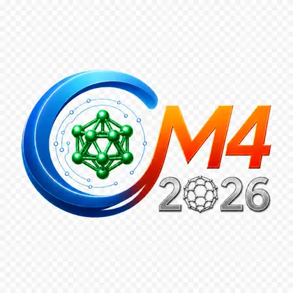
CM4 2026

Indian Institute of Science, Bengaluru

CSIR-IICT Hyderabad
NIT Mizoram

Digital University Kerala
IIIT Delhi

IIIT Delhi

IIT Hyderabad

IIT Goa
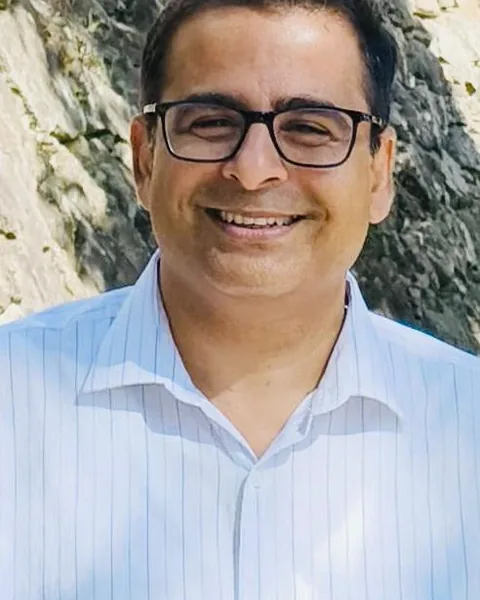
IIT Indore

CSIR-CFTRI

NIT Durgapur

IIIT Hyderabad
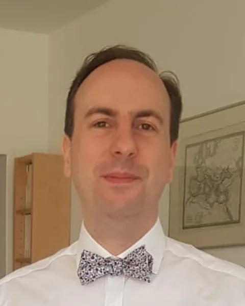
Sorbonne Université, France
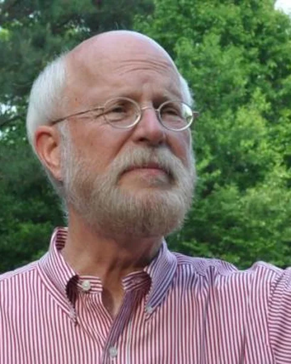
University of Georgia, USA

CUSAT

Indian Institute of Science, Bengaluru

Indiana University Bloomington, USA

NISER Bhubaneswar

IISER Thiruvananthapuram
Felicitation only

Technical University of Munich, Germany

IIT Hyderabad
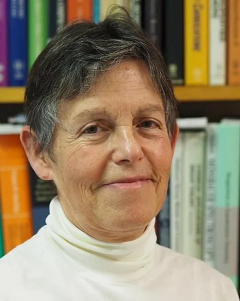
Université de Montpellier, CNRS, ENSCM, France
Online

IIT Palakkad

Amrita Vishwa Vidyapeetham
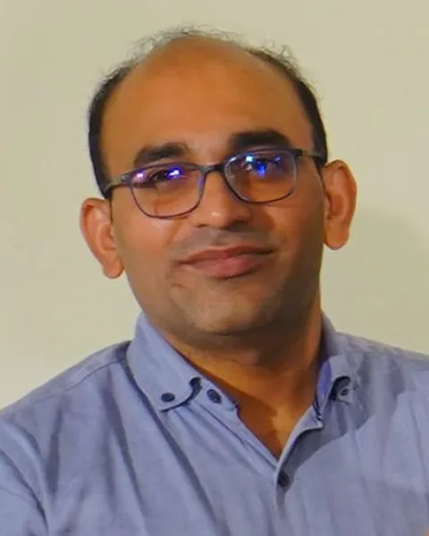
NIT Calicut

Head, CSIR–Human Resource Development Group, New Delhi

Heidelberg University, Germany

NIPER Mohali
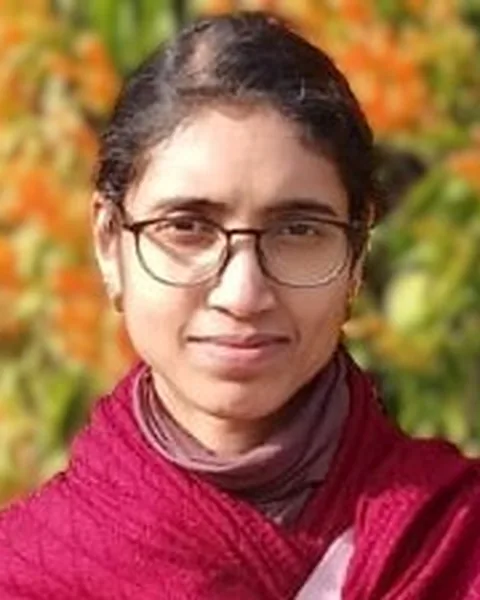
IISER Mohali
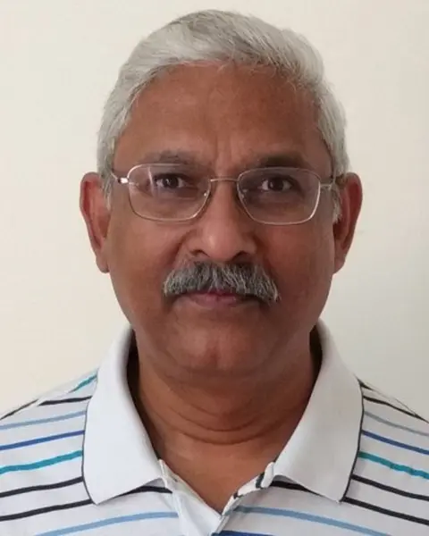
University of Hyderabad
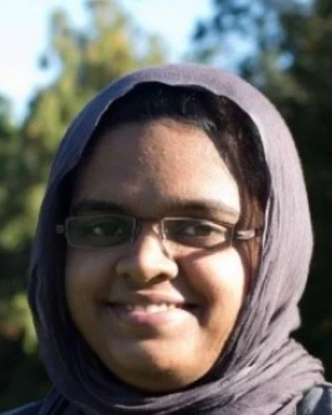
IIT Palakkad
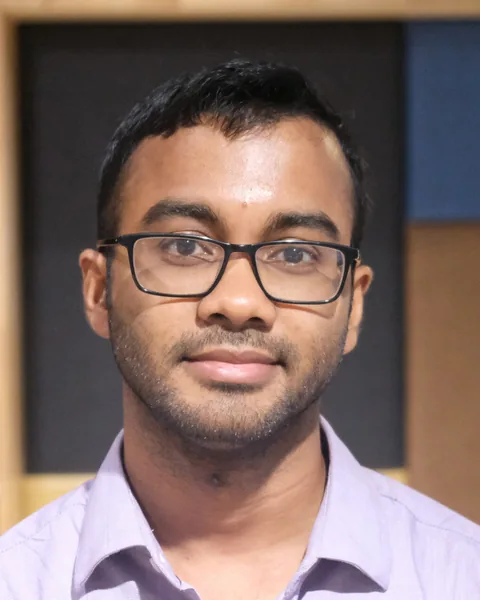
Hokkaido University, Japan

The Hebrew University of Jerusalem, Israel
Online

IIT Guwahati
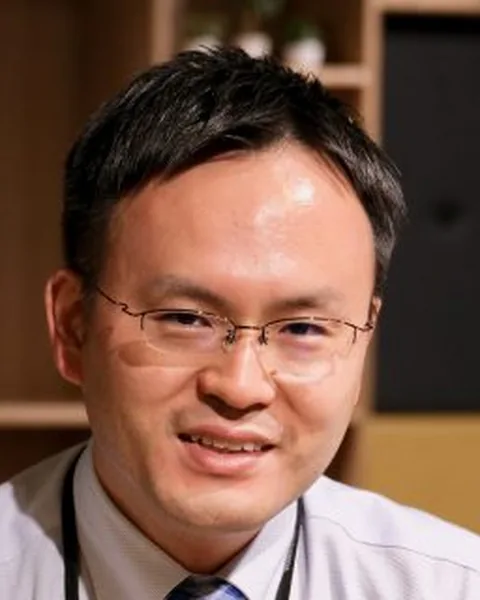
Hokkaido University, Japan
IISc Bengaluru
Felicitation only

CSIR-IICT Hyderabad

NIT Durgapur
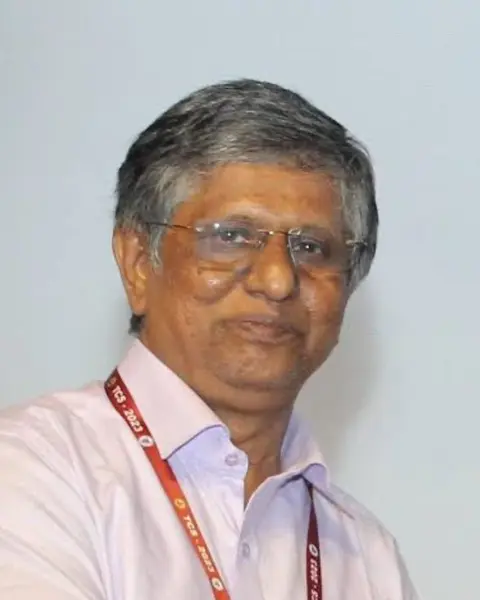
SRM Institute of Science and Technology; IIT Madras

University of Calicut

IISER Thiruvananthapuram
IISc Bengaluru
IISc Bengaluru
IISc Bengaluru
University of Warsaw, Poland

Applied Materials
Prescience Insilico
IIT Palakkad